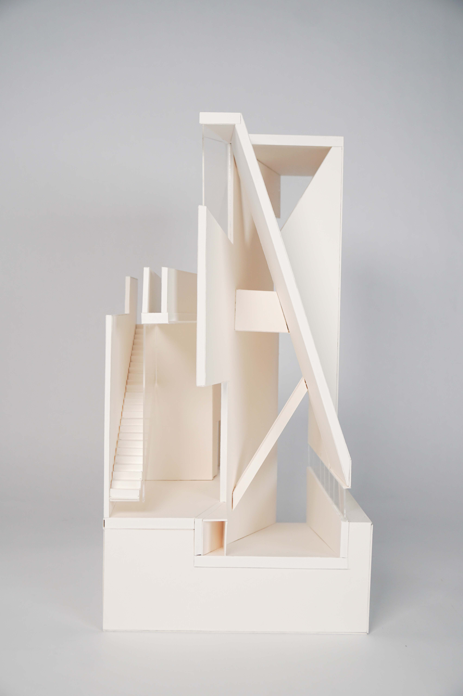
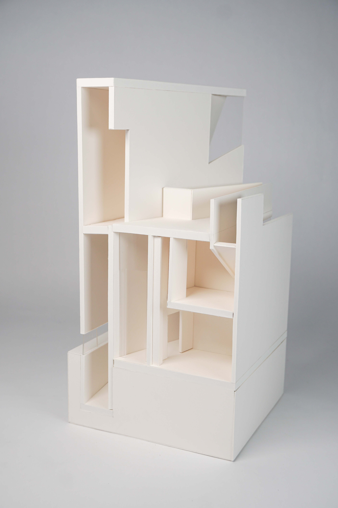

Studying the Tanikawa House designed by Kazuo Shinohara, I designed a residential housing project to analyze poetic architecture in the urban scene. Tanikawa House was inspired by a poem written by the client, and Shinohara has been following his rules of simplifying and limiting design languages to achieve the sense of poetic in architecture. Forming my rules of using a grid system with average ratio and design based on the system is like writing a ballad following the structure of multiple 4-line stanzas. The rule gives harmony with the house and the neighborhood, it is a poem written in the book of the society.
|  |  |